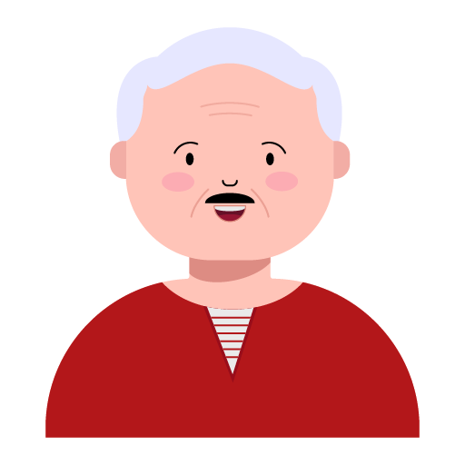

Agile Project Management
Ali, Efe, Gokhan, Murtaza, Vrutika, Shilpa, & Hoori

| Rank | ID | Description | Size | MoSCoW |
|---|---|---|---|---|
| 1 | A1 | Daily check-in | S | Must |
| 2 | A2 | SOS button | M | Must |
| 3 | M1 | Family dashboard | M | Must |
| 4 | M2 | Missed check-in alert | S | Must |
| 5 | L1 | Neighbor SOS fallback | M | Must |
| 6 | S1 | Daily highlights | M | Should |
| 7 | I1 | Book on Astrid’s behalf | M | Should |
| 8 | L2 | “I’m on my way” confirmation | S | Should |
| 9 | A3 | Grocery delivery (needs breakdown) | L | Should |
| 10 | I2 | See who did what | S | Could |
| 11 | I3 | Notes on booking | S | Could |
| 12 | M3 | Vitals trends | L | Could |
| 13 | S2 | Video call from timeline | L | Could |
| 14 | S3 | Heart / voice note reaction | S | Won’t |
| 15 | L3 | Non-emergency nudge | M | Won’t |